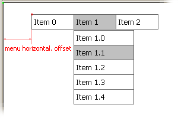

|

X coordinate of the menu, horizontal offset of the menu in pixels from the origin point (green square on the illustration above).
- Tigra Menu only supports absolute positioning so the origin point is always top left corner of the document (as illustrated).
- Tigra Menu PRO supports alignment feature (see Menu Align) so the origin point can be set
to the center of the document or to its right edge. The menu will adjust its position as the browser window is resized.
- Tigra Menu GOLD supports relative positioning feature (see Positioning) which when enabled
blocks menu offset parameters.
|